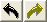

Az alábbi ábra a Diatár kotta-szerkesztő ablakát mutatja.
Alul megjelenik az aktuális szövegsor. Ezt most nem tudjuk módosítani, de a kis piros vonal, a "horgony" jelzi, hova kerül a kottajel.
A szöveg fölött a kotta, mindig oda kerül a hangjegy, ahol a piros vonal mutatja a szövegben. Több kottajelet írva egy betű fölé, az szét fogja tolni a szöveget, hogy elférjen, így hajlításokat is írhatunk egy szótagra. A kottában villog a kurzor, mutatja az aktuális szerkesztés helyét.
A kép felső részén a kotta elemek eszköztára található, innen beszúrhatunk új elemet, vagy módosíthatjuk a hangok és szünetek hosszát, a hangjegyek stílusát.
Első lépésként kattintsunk a szövegbe a megfelelő betű elé, és a felső eszköztárról szúrjuk be a kívánt hangot vagy kottajelet. Egy helyre beszúrhatunk több jelet is.
A szokásos szerkesztési műveletek és néhány speciális lehetőség használhatók a kottasorban:
- egérrel kattintás vagy jobbra/balra nyíl billentyű: mozgás a kottában
- egérrel végighúzás vagy Ctrl+jobbra/balra nyíl billentyű: terület, kottarész kijelölése
- "Backspace" és "Del" billentyűk: törlés balra/jobbra, illetve a kijelölt terület törlése
-
 gombok, Ctrl+U és Ctrl+R billentyűk: visszavonás és "visszavonás visszavonása" (undo és redo angolul)
-
 gombok, Ctrl+X, Ctrl+C és Ctrl+V billentyűk: kivágás, másolás,
beszúrás (cut, copy és paste)
gombok, Ctrl+X, Ctrl+C és Ctrl+V billentyűk: kivágás, másolás,
beszúrás (cut, copy és paste) -
 gombok,
fel/le nyíl billentyű: az aktuális hang vagy a kijelölt terület
kottahangjainak mozgatása felfelé-lefelé
gombok,
fel/le nyíl billentyű: az aktuális hang vagy a kijelölt terület
kottahangjainak mozgatása felfelé-lefelé -
gombok, Ctrl+fel/le nyíl billentyű: kottahang szárak iránya
Ezeken felül a TAB billentyűvel (vagy egérkattintással) átléphetünk a szövegbe, ekkor a kurzor ott fog villogni, és a piros csík a kottában mutatja, hol tartunk. Így tudunk a szöveg tetszőleges helyére kottát pozícionálni.
A következő oldalon részletes lista olvasható a kotta elemekről, amelyeket a program meg tud jeleníteni. Tovább >>